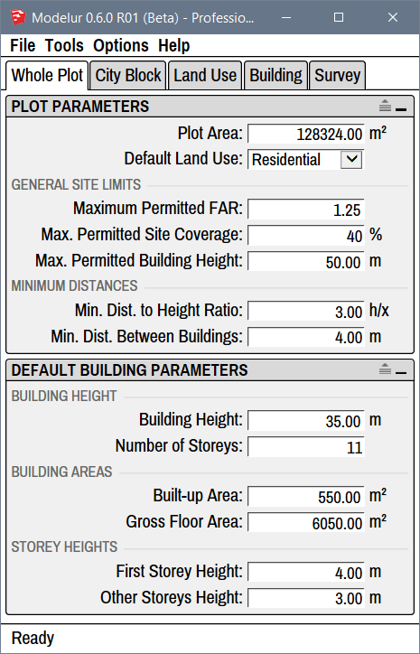
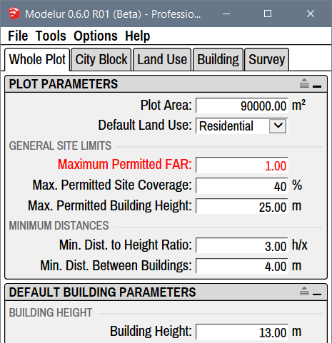

Whole Plot
Under the Whole Plot tab (Figure 4.21) you can define default Zoning constraints and Building Parameters that are applied throughout the development area if not specified otherwise. To understand how Parameters work inside Modelur, please visit Parameters hierarchy explanation.

Compact and Extended View
In case you don't see separators between parameters you can turn them on using the extend icon on the top right corner of each panel:  .
.
Plot Parameters¶
Inside the Plot Parameters panel you can define default parameters that are valid for the whole development area unless they are overloaded by specific City Blocks.
Plot Area
Plot area represents the size of the whole development area. This parameter is used to calculate Floor Area Ratio (FAR = Gross Floor Area/Plot Area) and Site Coverage (Built-up Area/Plot Area) of the whole development area.
In case you have any City Blocks defined, Modelur will automatically sum up their areas and display it here (and also use it in calculations). However, if you want you can overload sum of City Block's areas by simply entering the area size of your choice. If you then prefer to use calculated value instead, just delete your specified area size and Modelur will set it back to sum of City Blocks.
Default Land Use
Using default Land Use dropdown menu you can set the default Land Use for City Blocks and Buildings. Land Uses are used to calculate Building's units (eg. apartments, residents, offices, etc), parking requirements, green area requirements, etc. To learn more about these settings, please visit Land Use section of this page.
General Site Limits¶
Under General Site Limits you can set the default constraints set by zoning ordinance so that Modelur can warn you if they are exceeded. But it will not prevent you from exceeding them.
In case your development model exceeds set Zoning Constraints, they will become red, to warn you about it (Figure 4.22). Once the model is fixed to meet constraints again (or when zoning ordinance constraints themselves are updated), exceeded parameters will turn back to black. These parameters can also be set for each City Block separately. When defined on City Block level, they are valid only for that City Block (including the Buildings Heights).

Maximum Permitted FAR
Using maximum permitted Floor Area Ratio you can define allowable FAR for the whole development area. In case FAR value for the Whole Plot is exceeded, this line will become red, to warn you about it. If you don't want Modelur to validate achieved FAR, simply erase this value and hit Enter.
Max. Permitted Site Coverage
Using maximum permitted Site Coverage you can define allowable Site Coverage for the whole development area. In case Site Coverage value for the Whole Plot is exceeded, this line will become red, to warn you about it. If you don't want Modelur to validate achieved Site Coverage, simply erase this value and hit Enter.
Max. Permitted Building Height
Using maximum permitted Building Height you can define height restrictions for the whole development area. In case some Building is higher than specified here, this line will become red, to warn you about it. If you don't want Modelur to validate Buildings Heights, simply erase this and hit Enter.
Distances¶
Percentage of Building Height:
Percentage of Building Height is used to calculate minimum distance between two Buildings based on their heights. Example: if this parameter is set to 50% and Building is 20 meters high, the minimum distance required will be 10 meters (which is 50% from 20 meters).
Deprecated: In versions of Modelur prior to 2018.1, this option was named Min. Distance to Height Ratio. To calculate distance, the Building's height is divided by the parameter value. Example: if parameter is set to 2, the minimum distance will be ½ of Building's height, if set to 3, it will be ⅓ of Building's height. If the Buildings are placed closer than the calculated distance, they will be marked red (assuming that Too low distance between Buildings is active).
Min. Dist. Between Buildings
Minimum distance between Buildings is the absolute distance (in meters or feet) between any two Buildings. If the Buildings are placed closer than this specified distance, they will be marked red (assuming that Too low distance between Buildings is active).
Default Building Parameters¶
Default Building Parameters inside the Whole Plot tab are the topmost Building parameters in Modelur's hierarchy. This means that if the parameter in question is not defined by the Building itself (or any object in it's hierarchy, eg. City Block), Modelur will apply the values defined here to the Building. For example, when you create a new Building, it will contain number of storeys, Land Use, etc as defined here.
Building Height¶
Building Height
Building height sets how tall should the Building be in chosen units (metric or imperial). When changing Number of Storeys, First Storey Height and Other Storey Heights this parameter will adapt itself automatically.
Number of Storeys
Number of storeys sets the number of Building's storeys. When you change this parameter, Building Height (described above) will be adapted automatically to reflect calculated height based on Number of Storeys and First and Other storeys Height (described below).
Building Areas¶
Built-up Area
Built-up area sets the default floor area size of the Building. Please note that this value will be automatically overloaded when creating the Building (to keep drawn floor area size) unless you check the Manually drawn floor plan assumes default Built-up Area under Building tab → Editing Modes of Building. Built-up Area will automatically be adapted if you change Gross Floor Area (described below) to match the division of Gross Floor Area with Number of Storeys.
Gross Floor Area
Gross floor area parameter is used to define default gross floor area size of the Building. If Building is created from scratch (no horizontal SketchUp Face is selected), this will be used to determine size of the Building (in combination with Number of Storeys).
Storey Heights¶
First Storey Height
First storey height is used to set the default height of Building's ground floor. Changing this parameter will change default Building Height, too.
Other Storeys Height
Other storeys height is used to set the default height of all Building's storeys above ground floor. Changing this parameter will change default Building Height, too.